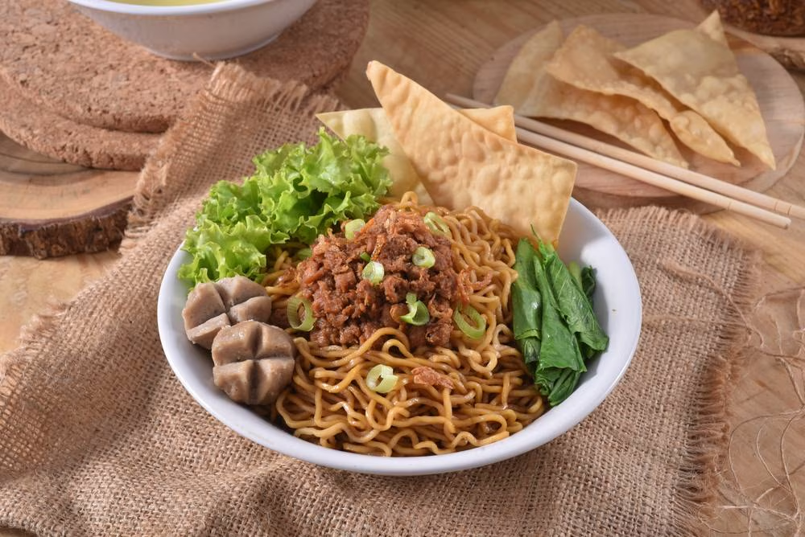

Makanan Favorit Orang Indonesia

Siapa yang bisa menolak semangkuk mie ayam hangat? Kuliner sejuta umat ini hampir selalu bisa ditemukan di setiap sudut kota, mulai dari gerobak kaki lima pinggir jalan hingga restoran bintang lima.
Perpaduan rasa gurih, manis, dan teksturnya yang kenyal membuat mie ayam punya tempat spesial di hati masyarakat Indonesia.
Mari kita bedah apa saja yang membuat semangkuk mie ayam begitu menggoda:
- Mie yang Kenyal: Modal utama mie ayam yang enak adalah tekstur mienya. Biasanya menggunakan mie kuning basah yang direbus pas—tidak terlalu lembek dan tetap kenyal saat dikunyah.
- Toping Ayam Semur: Potongan daging ayam yang dimasak dengan kecap manis, bawang, dan rempah-rempah. Kuah kental dari ayam inilah yang memberikan sentuhan rasa manis-gurih yang khas.
- Minyak Ayam Bawang: Ini dia rahasia kelezatan mie ayam. Minyak yang dibuat dari tumisan kulit ayam dan bawang putih ini dituang di dasar mangkuk sebelum mie dimasukkan, memberikan aroma harum yang menggugah selera.
- Kuah Kaldu Bening: Disajikan terpisah atau langsung disiram, kuah kaldu tulang ayam yang hangat dan segar berfungsi menyeimbangkan rasa.